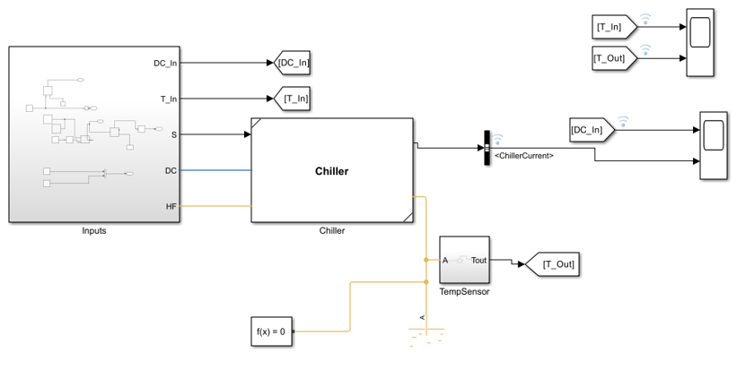
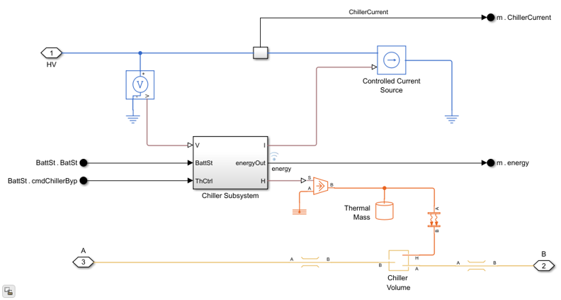

Estimate Range with Thermal Loads
Vehicle workflow — Includes chiller electrical and thermal demand in range calculations.
Remove heat from the vehicle coolant loop
Component path: Components / Chiller

Chiller component for the BEV thermal management system. The chiller removes heat from the battery coolant loop when the pack temperature rises above safe limits, particularly during hot-ambient driving or fast charging. Three fidelity levels are available depending on whether coolant-loop dynamics are needed.
Use Chiller for active heat removal through the coolant loop, ChillerNoCoolant when only HV auxiliary power matters, and ChillerDummy to keep a thermal-liquid loop connected without modelling heat exchange.
| Model | Description | Use case | Templates | Documentation & files |
|---|---|---|---|---|
| Chiller | Controlled current source with thermal mass and coolant coupling. | Hot-climate range estimation and thermal management strategy evaluation where coolant loop dynamics are important. | VehicleElectroThermal | Documentation · Parameters |
| ChillerNoCoolant | Electrical load on HV bus without coolant ports. | Fast vehicle-level simulations where the chiller electrical load matters but coolant loop dynamics are not needed. | Not in shipped config | Documentation · Parameters |
| ChillerDummy | Fixed load with coolant pass-through and no heat exchange. | Integration testing or fast simulations where chiller behavior is not under study but the model needs a connected chiller block. | VehicleElectroThermal | Documentation · Parameters |
Workflow/Vehicle/RangeEstimation/) — The chiller is active during high-ambient simulations to cool the battery pack. Its energy draw impacts vehicle range.
Vehicle workflow — Includes chiller electrical and thermal demand in range calculations.
All fidelities share the same HV-bus electrical boundary. Chiller and ChillerDummy include coolant ports; ChillerNoCoolant provides only the electrical interface.
| Port / signal | Direction | Description |
|---|---|---|
| Battery status | Input | Pack temperature and thermal state from the BMS. |
| Chiller bypass control | Input | On/off or bypass command from the thermal controller. |
| HV bus connection | Input | Electrical connection for chiller power draw. |
| Coolant port (Chiller, ChillerDummy) | Conserving | Thermal-liquid interface for coolant loop heat exchange. |
| Chiller Current | Output | Current drawn from the HV bus. |
| HV Power | Output | Electrical power consumed. |
| Thermal States (Chiller) | Output | Chiller temperature and heat flow to coolant. |
Verify coolant heat exchange and electrical load under controlled thermal inputs.
Run the maintained Chiller test case before integration.